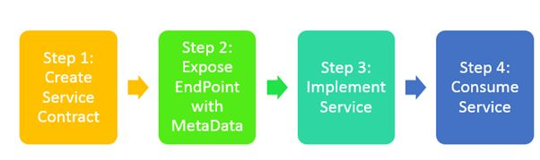

This tutorial is meant for new developers. Though there are resources available that outline Windows Communication Foundation, they are quite complex and geared towards intermediate/expert developers. This how-to-guide is meant help beginner developers get a WCF service up and running. Its primary focus is work through the abstraction and understand the components of creating and consuming a WCF service.
Windows Communication Foundation is a Microsoft framework designed to enable developers to create service-oriented applications. There are several benefits of using the WCF framework over web services, namely communication can happen over several different protocols including (but not limited to) HTTP, TCP, and IPC. A WCF Service can also be hosted in many ways leveraging Internet Information Services (IIS), inside a Windows service or self hosted.
As outlined on msdn, below is a list of typical applications of WCF:
This site is meant to be an introduction to Windows Communication Foundation. It will provide an overview of service contracts, operation contracts and data contracts as well as consuming a web service. It will not discuss indepth configuration options pertaining to security, transmission and authentication. To learn more about these more advanced features of WCF, please see the Additional Resources section.

Photo reference
Note: All sample code is written in c#.